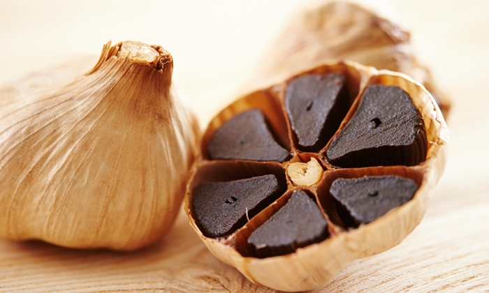
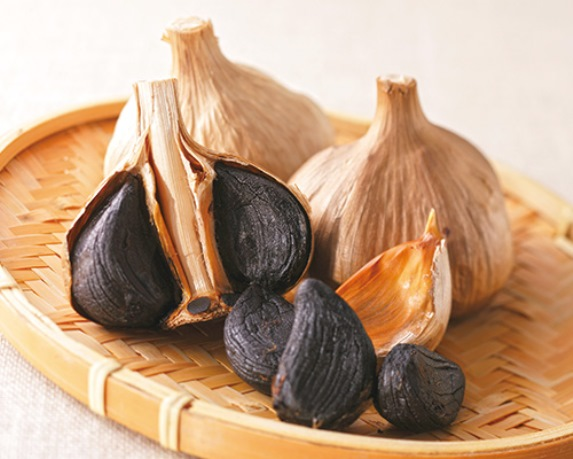
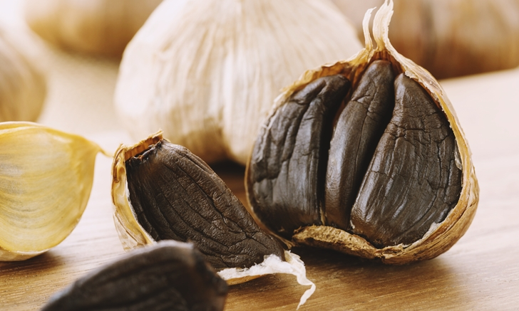

พิกัดกาดขัวมุง
สั่งซื้อสินค้า
วิธีการทำ
ข้อมูลสินค้า
หน้าหลัก
ข้อมูลสินค้า
เค้กลำไย
จากผลผลิตลำไยที่ล้นตลาดแทบทุกปี ส่งผลให้ราคาตกต่ำ ชาวบ้านขาดทุนย่อยยับ บางรายถึงกับท้ออยากเลิกอาชีพชาวสวนลำไยไปก็มีเหมือนกัน แต่ด้วยเป็นชุมชนที่เข้มแข็งและมีผู้นำที่ดี
จึงหาอาชีพเสริมให้กับชาวบ้าน เพื่อให้มีรายได้ทดแทนจากการปลูกลำไย ซึ่งก็ยังไม่ทิ้งความคิดที่จะนำลำไยมาแปรรูปเพื่อเพิ่มมูลค่าหวังช่วยเพิ่มรายได้ให้กับชาวบ้านจนกระทั่ง
นางประไพ สุภามงคล ปัจจุบันดำรงตำแหน่งเหรัญญิกกลุ่มวิสาหกิจชุมชนห้วยกานเบเกอรี่ ได้ตัดสินใจเรียนการทำเบเกอรี่ขั้นพื้นฐาน โดยเน้นไปที่การทำเค้ก
เพื่อมาฝึกสอนให้กับชาวบ้านในกลุ่มฯ จากเดิมที่ชาวบ้านประกอบอาชีพหลัก คือ การทำสวน ทำไร่ รับจ้างมัดหอมแดง-กระเทียม ซึ่งได้รับค่าจ้างแบบรายวัน
จนเมื่อปี 2544 ที่ผ่านมาราคาลำไยในท้องถิ่นตกต่ำมาก ทำให้ชาวบ้านขาดรายได้จากการขายลำไย
ผ้าไหมยกดอกลําพูน
กลุ่มลำพูนผ้าไหมไทย ได้เริ่มรวมกลุ่มกันทอผ้าไหมยกดอกเมื่อต้นปี พ.ศ.2535 และได้อนุรักษ์ลวดลายผ้าไหม ยกดอกแบบโบราณซึ่งเป็นเอกลักษณ์ของลำพูน เช่น ลายดอกแก้วหรือลายพิกุล
ไว้ทั้งยังได้คิดค้นลวดลายใหม่ๆ เพิ่มขึ้นเพื่อใช้ในโอกาสงานพระราชพิธีต่างๆ และงานแฟชั่นเครื่องแต่งกายร่วมสมัยในปัจจุบัน โดยมีลวดลายให้เลือกหลายแบบทำให้วงการผ้าทอของลำพูน
มีความก้าวหน้าได้ควบคุมคุณภาพผ้าทอ ให้ได้มาตรฐานเป็นเลิศเพิ่มขึ้นเพื่อใช้ในโอกาสงานพระราชพิธีต่างๆ และงานแฟชั่นเครื่องแต่งกายร่วมสมัยในปัจจุบัน
โดยมีลวดลายให้เลือกหลายแบบ ทำให้วงการผ้าทอของลำพูนมีความก้าวหน้าได้ควบคุมคุณภาพผ้าทอให้ได้มาตรฐานเป็นเลิศ
ลำไยอบแห้งเนื้อสีทอง
กลุ่มวิสาหกิจชุมชนแปรรูปลำไยอบแห้งเนื้อสีทอง ตรา ถุงทอง ตั้งอยู่เลขที่ 205 หมู่7 ตำบลมะเขือแจ้ อำเภอเมือง จังหวัดลำพูน ห่างจากตัวอำเภอเป็นระยะทาง 17 กิโลเมตร
ห่างจากเขตติดต่อจาก อำเภอสารภีจังหวัดเชียงใหม่เป็นระยะทาง 15 กิโลเมตร กลุ่มวิสาหกิจ ชุมชนกลุ่มแปรรูปลำไยอบแห้งเนื้อสีทอง ตรา ถุงทอง
ได้จดทะเบียนเป็นกลุ่มวิสาหกิจชุมชนแนวคิดการทำลำไยอบแห้งเนื้อสีทอง คือ ผลผลิตลำไยสดล้นตลาด ราคาตกต่ำ
จึงนำลำไยสดไปแปรรูปโดยการนำไปอบแห้ง เพื่อเพิ่มมูลค่าให้กับสินค้า และรักษาสินค้าให้อยู่ได้ นานขึ้น
  
กระเทียมดำ
กระเทียมดำ จริงๆ แล้วก็คือกระเทียมขาวที่เรารู้จักกันดีนั่นเอง แต่ได้มีการนำกระเทียมขาวมาผ่านการอบบ่ม (fermentation) ที่อุณหภูมิประมาณ 60 – 90 องศาเซลเซียสภายในห้องควบคุม
ที่มีความชื้นสัมพัทธ์ 80 - 90 % เป็นเวลาอย่างน้อย 1 เดือน จนกระเทียมเปลี่ยนเป็นสีดำ กระเทียมดำที่ได้จะมีเนื้อสัมผัสเหนียว ยืดหยุ่นคล้ายเจลลี่ รสชาติหวาน มีกลิ่นฉุนของกระเทียมลดลง
และพบปริมาณสารสำคัญเพิ่มขึ้น ได้แก่ สารแอนโทไซยานิน (anthocyanin) สูงกว่าเดิม เพิ่มสารออกฤทธิ์ที่มีประโยชน์ต่อร่างกายได้ดีกว่ากระเทียมสดถึง 13 เท่า